Candidate List 20260605 Previous Day Next Day Section 1: New Sources (age<1d) Cosmological Afterglow
Section 2: Old (1-5d) sources observed last night placeholder
Section 1: New Afterglow/FBOT Cands Last Night (8)
1. ZTF26aazsxbx (FBOT?) [Back to Top] [Share] [Trigger Swift] [Fritz ] [Lasair ]RA, Dec: 195.00061, -1.04367 13h 0m0.15s, -1d-2m-37.21sGalactic (l, b): 307.4589, 61.75278 WARNING: 4.95 deg from ecliptic plane ext(g-r) = 0.023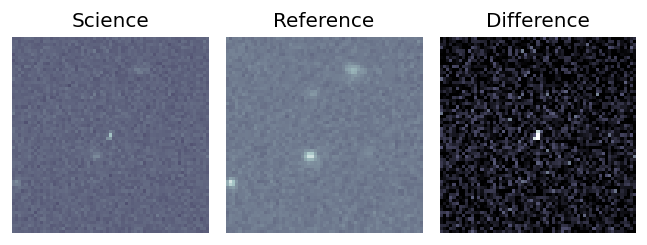
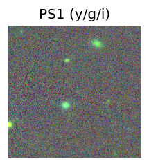
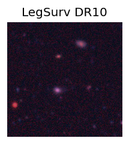
LegacySurvey: 1 sources in 3 arcsec Closest: d = 1.10 arcsec, 246.6 deg (east of north) photoz=0.81 (68% bounds 0.53, 1.28), type=PSF peak abs mag = -23.87 (68% bounds -22.77, -25.09) 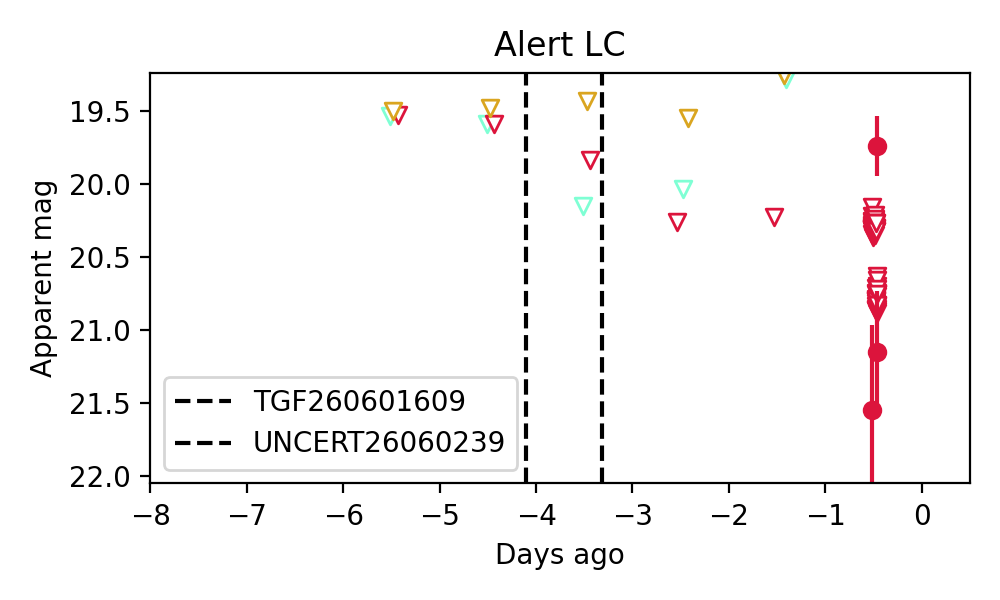
2. ZTF26aaztpep (Afterglow?) [Back to Top] [Share] [Trigger Swift] [Fritz ] [Lasair ]RA, Dec: 212.30492, -17.88438 14h 9m13.18s, -17d-53m-3.76sGalactic (l, b): 327.83274, 41.19609 WARNING: -4.56 deg from ecliptic plane ext(g-r) = 0.098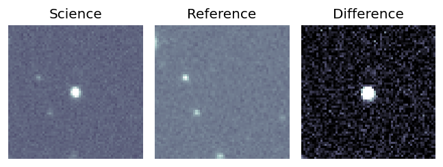
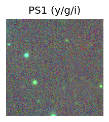
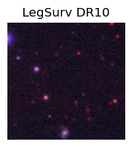
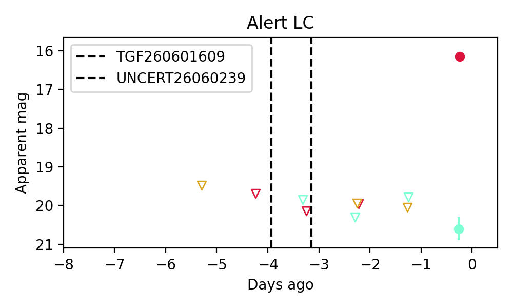
Consistent with synchrotron, g-r>0!
3. ZTF26aaztpnl (Afterglow?) [Back to Top] [Share] [Trigger Swift] [Fritz ] [Lasair ]RA, Dec: 210.74967, -16.30592 14h 2m59.92s, -16d-18m-21.31sGalactic (l, b): 326.79938, 43.22477 WARNING: -3.58 deg from ecliptic plane ext(g-r) = 0.104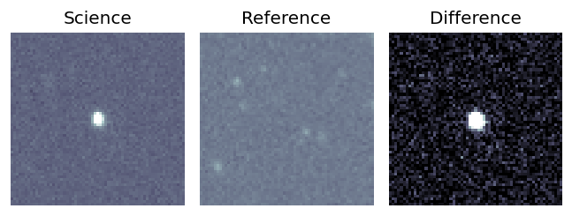
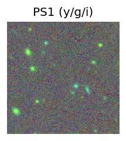
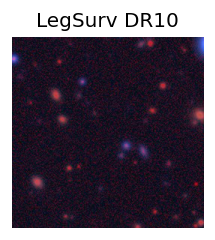
LegacySurvey: 1 sources in 3 arcsec Closest: d = 6.60 arcsec, 218.9 deg (east of north) photoz=1.56 (68% bounds 0.66, 3.32), type=REX peak abs mag = -28.97 (68% bounds -26.67, -30.97) 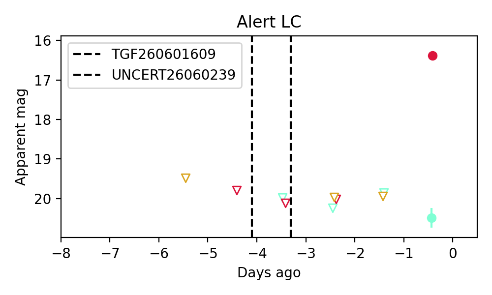
Consistent with synchrotron, g-r>0!
4. ZTF26aaztuqq (Afterglow?) [Back to Top] [Share] [Trigger Swift] [Fritz ] [Lasair ]RA, Dec: 218.20285, 3.47685 14h32m48.69s, 3d28m36.66sGalactic (l, b): 353.02189, 56.15088 ext(g-r) = 0.031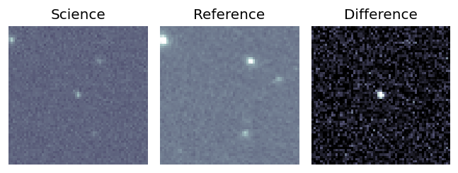
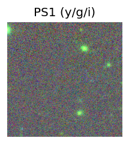
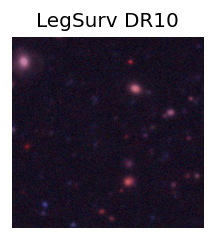
LegacySurvey: 1 sources in 3 arcsec Closest: d = 5.79 arcsec, 331.5 deg (east of north) photoz=0.7 (68% bounds 0.58, 0.89), type=PSF peak abs mag = -23.78 (68% bounds -23.26, -24.41) 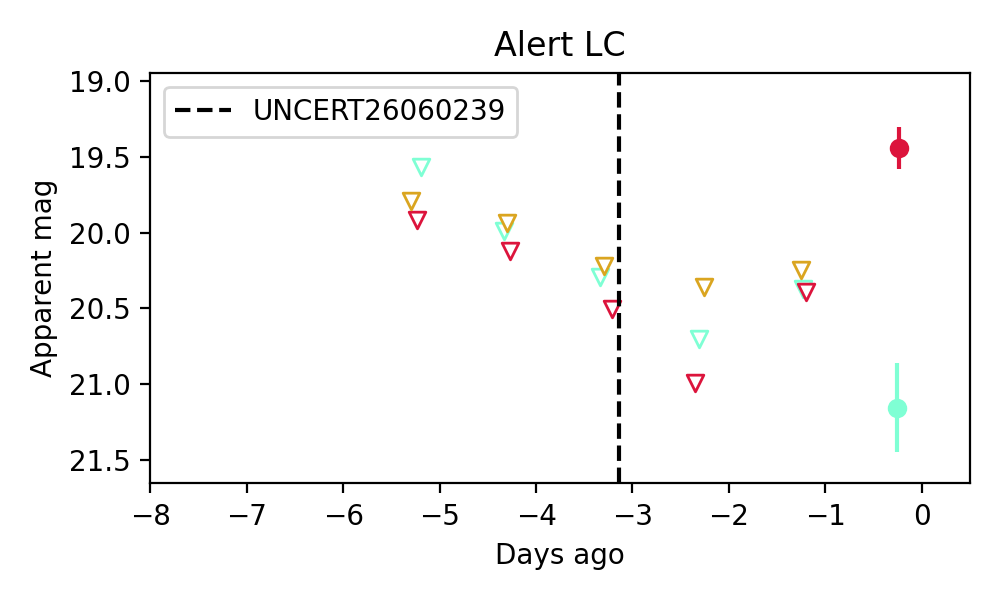
Consistent with synchrotron, g-r>0!
5. ZTF26aaztvoq (Afterglow?) [Back to Top] [Share] [Trigger Swift] [Fritz ] [Lasair ]RA, Dec: 218.21573, -5.67602 14h32m51.78s, -5d-40m-33.67sGalactic (l, b): 343.4827, 49.04349 ext(g-r) = 0.062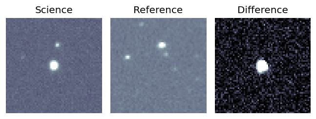
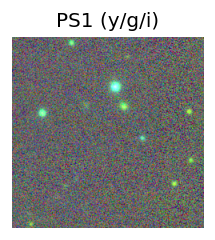
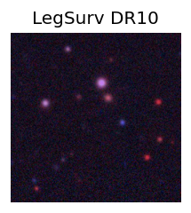
LegacySurvey: 1 sources in 3 arcsec Closest: d = 6.40 arcsec, 127.3 deg (east of north) photoz=0.65 (68% bounds 0.47, 1.03), type=REX peak abs mag = -27.62 (68% bounds -26.77, -28.87) 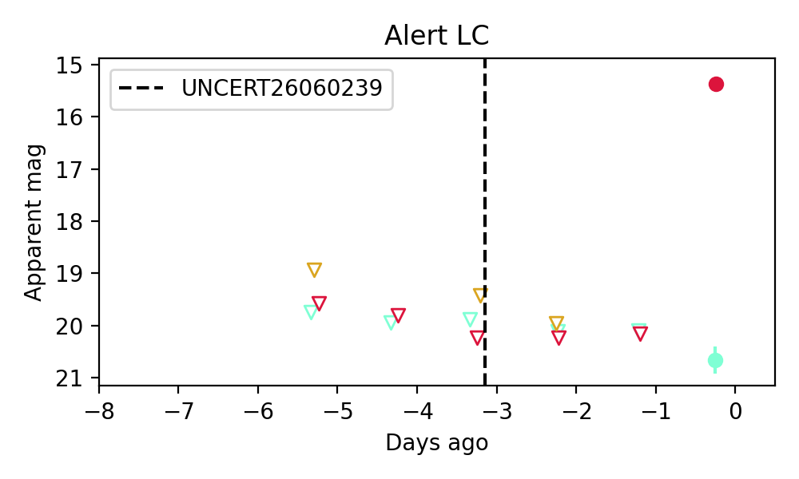
Consistent with synchrotron, g-r>0!
6. ZTF26aazutud (Afterglow?) [Back to Top] [Share] [Trigger Swift] [Fritz ] [Lasair ]RA, Dec: 219.34879, -12.56585 14h37m23.71s, -12d-33m-57.05sGalactic (l, b): 339.26369, 42.70862 WARNING: 2.67 deg from ecliptic plane ext(g-r) = 0.083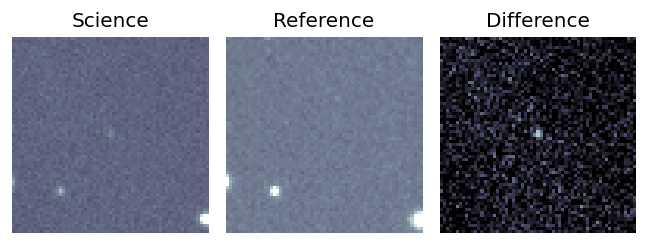
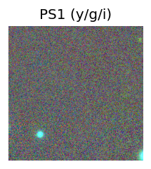
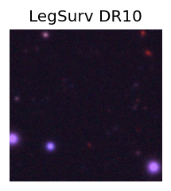
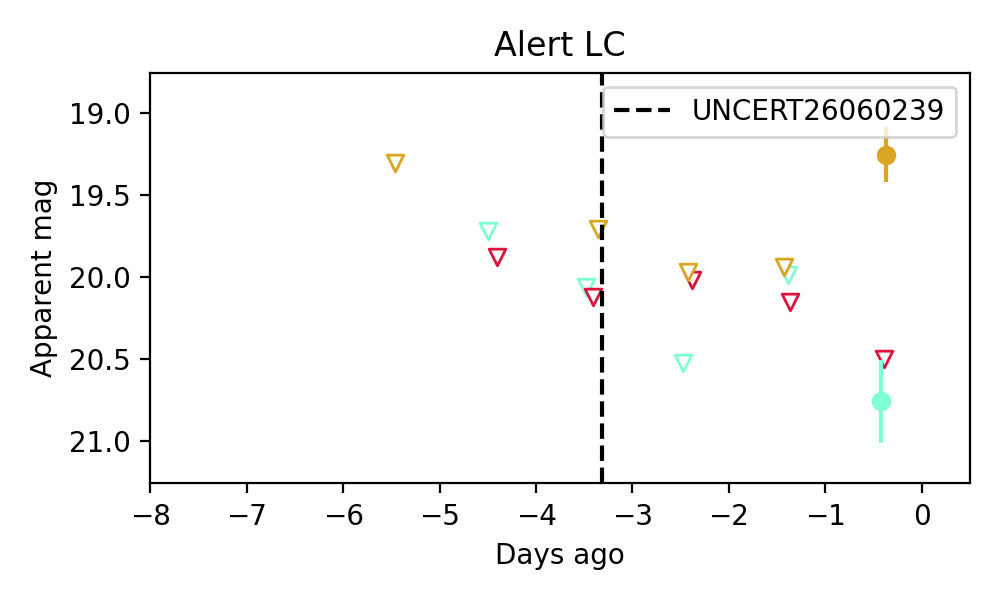
Consistent with synchrotron, g-r>0!
7. ZTF26aazwdgz (Afterglow?) [Back to Top] [Share] [Trigger Swift] [Fritz ] [Lasair ]RA, Dec: 301.48388, 11.58442 20h 5m56.13s, 11d35m3.90sGalactic (l, b): 52.02724, -10.77033 ext(g-r) = 0.135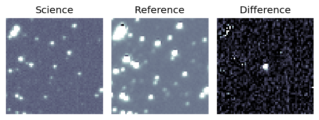
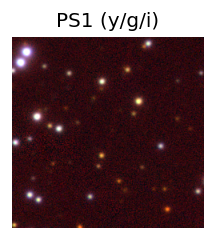
PS1: 1 source in 3 arcsec Closest: d = 1.00 arcsec photoz=0.42+/-0.02 peak abs mag = -23.68 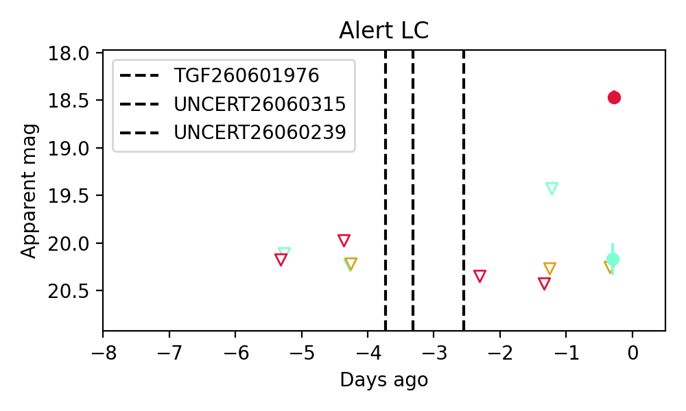
Consistent with synchrotron, g-r>0!
8. ZTF26aazwvck (Afterglow?) [Back to Top] [Share] [Trigger Swift] [Fritz ] [Lasair ]RA, Dec: 261.72603, -19.42851 17h26m54.25s, -19d-25m-42.62sGalactic (l, b): 5.78306, 8.68093 WARNING: 3.79 deg from ecliptic plane ext(g-r) = 1.049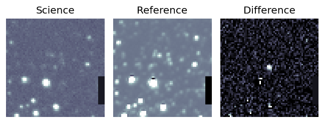
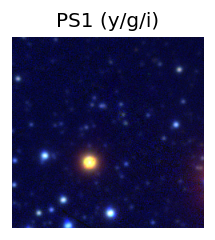
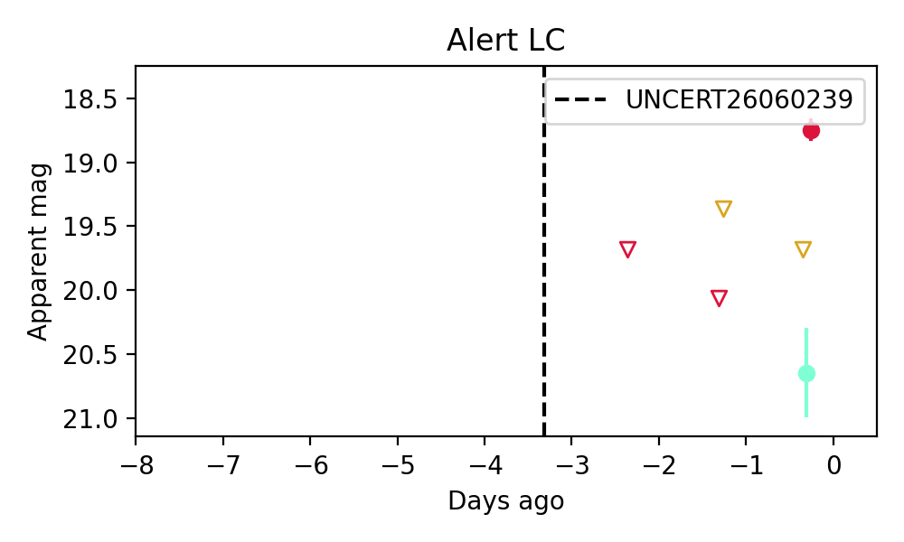
Consistent with synchrotron, g-r>0!
Section 2: Older Sources Observed Last Night (19)
0. ZTF26aayysdx (Afterglow?) [Back to Top] [Share] [Trigger Swift] [Fritz ] [Lasair ]RA, Dec: 263.3541, 37.01048 17h33m24.98s, 37d 0m37.72sGalactic (l, b): 61.75312, 30.78224 ext(g-r) = 0.041PS1: 1 source in 3 arcsec Closest: d = 8.88 arcsec photoz=0.88+/-0.25 peak abs mag = -27.50
1. ZTF26aayytig (Afterglow?) [Back to Top] [Share] [Trigger Swift] [Fritz ] [Lasair ]RA, Dec: 285.37956, -10.62731 19h 1m31.09s, -10d-37m-38.33sGalactic (l, b): 24.56436, -7.03951 ext(g-r) = 0.48
2. ZTF26aazcwph (Afterglow?) [Back to Top] [Share] [Trigger Swift] [Fritz ] [Lasair ]RA, Dec: 245.01606, -3.2654 16h20m3.85s, -3d-15m-55.43sGalactic (l, b): 10.22012, 31.27544 ext(g-r) = 0.249peak abs mag = -19.29 peak abs mag = -18.81
3. ZTF26aazhhaz (Afterglow?) [Back to Top] [Share] [Trigger Swift] [Fritz ] [Lasair ]RA, Dec: 281.27976, 25.9757 18h45m7.14s, 25d58m32.52sGalactic (l, b): 55.77268, 12.81318 ext(g-r) = 0.163PS1: 1 source in 3 arcsec Closest: d = 5.39 arcsec photoz=0.93+/-0.47 peak abs mag = -26.66
4. ZTF26aazhxtc (FBOT?) [Back to Top] [Share] [Trigger Swift] [Fritz ] [Lasair ]RA, Dec: 3.77529, 10.70162 0h15m6.07s, 10d42m5.85sGalactic (l, b): 108.61077, -51.15693 ext(g-r) = 0.124peak abs mag = -18.05 LegacySurvey: 1 sources in 3 arcsec Closest: d = 0.32 arcsec, 337.1 deg (east of north) photoz=0.99 (68% bounds 0.51, 1.49), type=PSF peak abs mag = -25.37 (68% bounds -23.6, -26.47) Consistent with synchrotron, g-r>0!
5. ZTF26aazjnrk (FBOT?) [Back to Top] [Share] [Trigger Swift] [Fritz ] [Lasair ]RA, Dec: 209.38824, 23.46099 13h57m33.18s, 23d27m39.55sGalactic (l, b): 22.79149, 74.62597 ext(g-r) = 0.021peak abs mag = -22.21 LegacySurvey: 1 sources in 3 arcsec Closest: d = 0.40 arcsec, 204.7 deg (east of north) photoz=0.1 (68% bounds 0.05, 0.73), type=EXP peak abs mag = -18.85 (68% bounds -17.45, -23.79) Consistent with synchrotron, g-r>0!
6. ZTF26aazjyhl (FBOT?) [Back to Top] [Share] [Trigger Swift] [Fritz ] [Lasair ]RA, Dec: 218.32173, -12.37472 14h33m17.22s, -12d-22m-28.99sGalactic (l, b): 338.24235, 43.40527 WARNING: 2.54 deg from ecliptic plane ext(g-r) = 0.098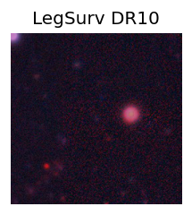
LegacySurvey: 1 sources in 3 arcsec Closest: d = 0.14 arcsec, 256.1 deg (east of north) photoz=0.62 (68% bounds 0.29, 1.22), type=REX peak abs mag = -23.65 (68% bounds -21.74, -25.45)
7. ZTF26aazknmk (FBOT?) [Back to Top] [Share] [Trigger Swift] [Fritz ] [Lasair ]RA, Dec: 229.41527, -24.91875 15h17m39.66s, -24d-55m-7.51sGalactic (l, b): 340.30586, 27.14429 ext(g-r) = 0.171LegacySurvey: 1 sources in 3 arcsec Closest: d = 1.16 arcsec, 71.1 deg (east of north) photoz=0.84 (68% bounds 0.4, 1.28), type=PSF peak abs mag = -25.87 (68% bounds -23.93, -27.0)
8. ZTF26aazrpzp (Afterglow?) [Back to Top] [Share] [Trigger Swift] [Fritz ] [Lasair ]RA, Dec: 168.1247, 11.54027 11h12m29.93s, 11d32m24.99sGalactic (l, b): 241.98369, 62.03291 ext(g-r) = 0.022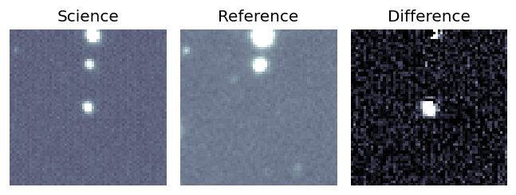
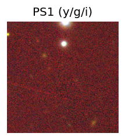
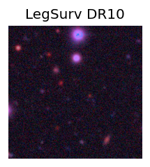
LegacySurvey: 1 sources in 3 arcsec Closest: d = 5.36 arcsec, 135.6 deg (east of north) photoz=0.52 (68% bounds 0.38, 0.77), type=REX peak abs mag = -26.38 (68% bounds -25.6, -27.43) 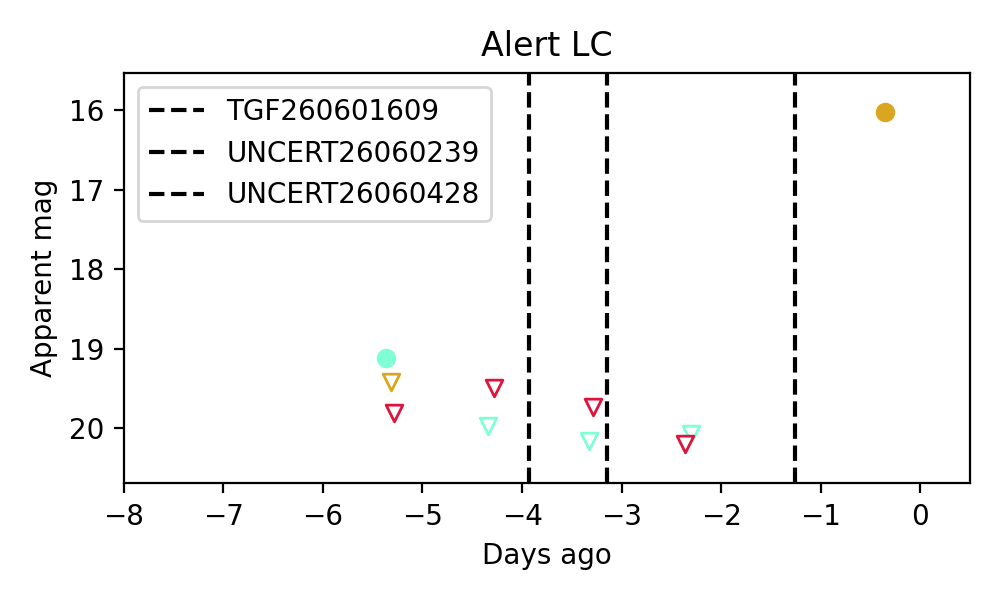
9. ZTF26aaztvdw (FBOT?) [Back to Top] [Share] [Trigger Swift] [Fritz ] [Lasair ]RA, Dec: 232.3285, 14.59198 15h29m18.84s, 14d35m31.13sGalactic (l, b): 22.21416, 51.23856 ext(g-r) = 0.045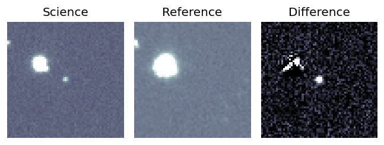
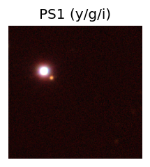
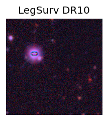
peak abs mag = -23.02 LegacySurvey: 1 sources in 3 arcsec Closest: d = 4.53 arcsec, 314.7 deg (east of north) photoz=0.72 (68% bounds 0.43, 1.21), type=PSF peak abs mag = -24.75 (68% bounds -23.41, -26.14) 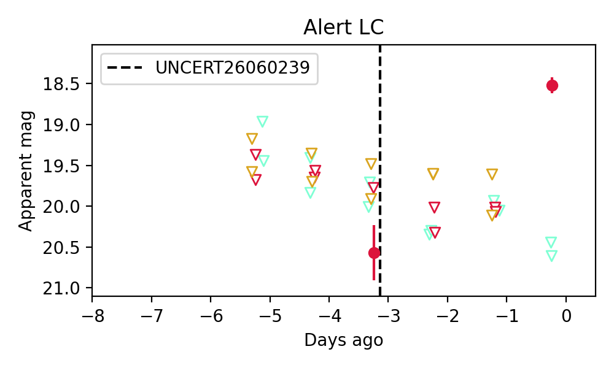
10. ZTF26aaztvgi (Afterglow?FBOT?) [Back to Top] [Share] [Trigger Swift] [Fritz ] [Lasair ]RA, Dec: 218.61417, 2.26702 14h34m27.40s, 2d16m1.27sGalactic (l, b): 352.10259, 54.9837 ext(g-r) = 0.039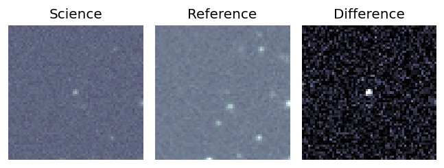
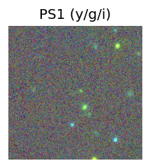
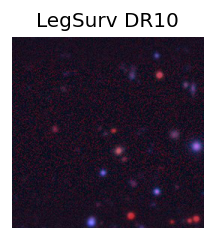
peak abs mag = -23.16 LegacySurvey: 1 sources in 3 arcsec Closest: d = 1.11 arcsec, 128.1 deg (east of north) photoz=0.56 (68% bounds 0.44, 0.68), type=EXP peak abs mag = -23.01 (68% bounds -22.39, -23.53) 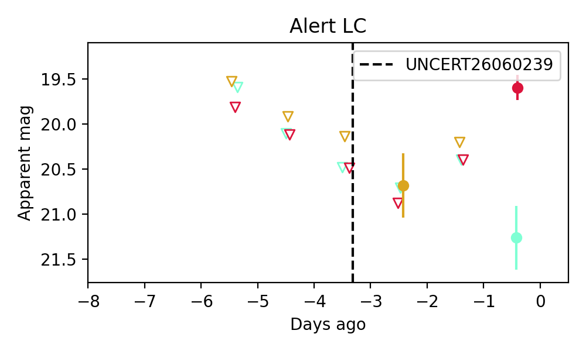
Consistent with synchrotron, g-r>0!
11. ZTF26aaztysy (FBOT?) [Back to Top] [Share] [Trigger Swift] [Fritz ] [Lasair ]RA, Dec: 218.00051, -7.44531 14h32m0.12s, -7d-26m-43.10sGalactic (l, b): 341.69558, 47.71404 ext(g-r) = 0.072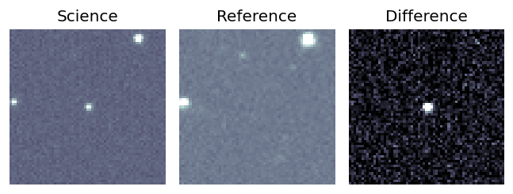
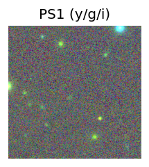
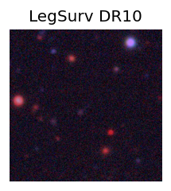
LegacySurvey: 1 sources in 3 arcsec Closest: d = 1.04 arcsec, 238.4 deg (east of north) photoz=1.02 (68% bounds 0.55, 1.37), type=REX peak abs mag = -25.92 (68% bounds -24.26, -26.69) 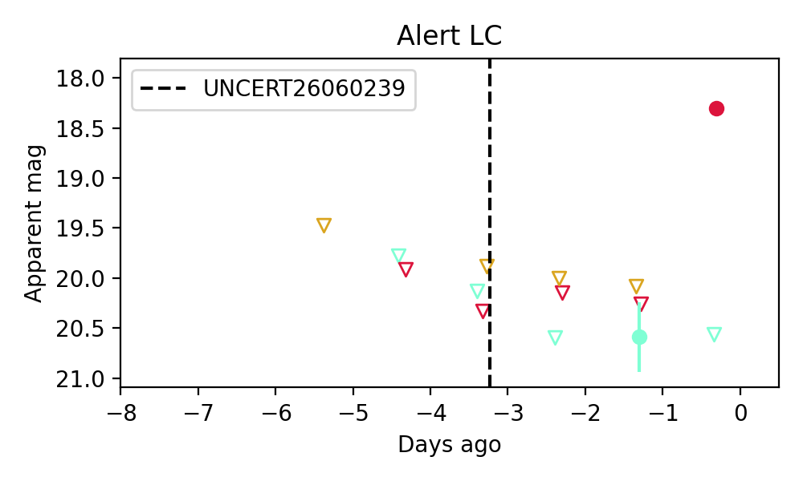
12. ZTF26aazuucu (FBOT?) [Back to Top] [Share] [Trigger Swift] [Fritz ] [Lasair ]RA, Dec: 230.14936, -10.03325 15h20m35.85s, -10d-1m-59.70sGalactic (l, b): 352.27969, 38.15473 ext(g-r) = 0.131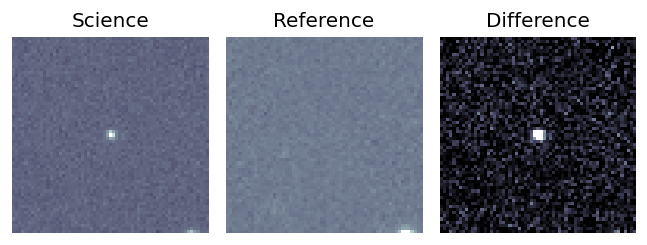
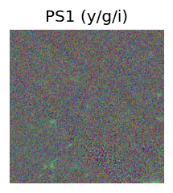
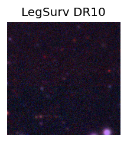
LegacySurvey: 1 sources in 3 arcsec Closest: d = 0.51 arcsec, 183.7 deg (east of north) photoz=0.72 (68% bounds 0.53, 0.98), type=PSF peak abs mag = -25.41 (68% bounds -24.61, -26.25)
13. ZTF26aazuyad (FBOT?) [Back to Top] [Share] [Trigger Swift] [Fritz ] [Lasair ]RA, Dec: 223.27605, 3.27816 14h53m6.25s, 3d16m41.37sGalactic (l, b): 358.87308, 52.40242 ext(g-r) = 0.051peak abs mag = -22.84 LegacySurvey: 1 sources in 3 arcsec Closest: d = 0.38 arcsec, 242.0 deg (east of north) photoz=0.35 (68% bounds 0.29, 0.4), type=EXP peak abs mag = -22.36 (68% bounds -21.9, -22.69)
14. ZTF26aazuzby (FBOT?) [Back to Top] [Share] [Trigger Swift] [Fritz ] [Lasair ]RA, Dec: 222.89813, -3.18583 14h51m35.55s, -3d-11m-8.99sGalactic (l, b): 351.34232, 48.06643 ext(g-r) = 0.113LegacySurvey: 1 sources in 3 arcsec Closest: d = 0.84 arcsec, 218.6 deg (east of north) photoz=0.98 (68% bounds 0.77, 1.63), type=PSF peak abs mag = -25.23 (68% bounds -24.6, -26.61)
15. ZTF26aazuzwx (FBOT?) [Back to Top] [Share] [Trigger Swift] [Fritz ] [Lasair ]RA, Dec: 252.79028, -24.4943 16h51m9.67s, -24d-29m-39.49sGalactic (l, b): 356.70778, 12.51765 WARNING: -1.98 deg from ecliptic plane ext(g-r) = 0.454PS1: 1 source in 3 arcsec Closest: d = 1.31 arcsec photoz=0.54+/-0.06 peak abs mag = -24.66
16. ZTF26aazvrhc (Afterglow?FBOT?) [Back to Top] [Share] [Trigger Swift] [Fritz ] [Lasair ]RA, Dec: 244.30688, -18.28507 16h17m13.65s, -18d-17m-6.26sGalactic (l, b): 356.45154, 22.55687 WARNING: 3.01 deg from ecliptic plane ext(g-r) = 0.345LegacySurvey: 1 sources in 3 arcsec Closest: d = 0.56 arcsec, 2.6 deg (east of north) photoz=0.72 (68% bounds 0.52, 1.45), type=PSF peak abs mag = -26.28 (68% bounds -25.43, -28.17)
17. ZTF26aazwdeh (FBOT?) [Back to Top] [Share] [Trigger Swift] [Fritz ] [Lasair ]RA, Dec: 289.23683, 0.69515 19h16m56.84s, 0d41m42.54sGalactic (l, b): 36.47002, -5.35446 ext(g-r) = 0.537PS1: 1 source in 3 arcsec Closest: d = 0.68 arcsec photoz=1.11+/-0.05 peak abs mag = -26.44 Consistent with synchrotron, g-r>0!
18. ZTF26aazwleu (FBOT?) [Back to Top] [Share] [Trigger Swift] [Fritz ] [Lasair ]RA, Dec: 240.43802, 3.68046 16h 1m45.13s, 3d40m49.67sGalactic (l, b): 14.19844, 38.93214 ext(g-r) = 0.118peak abs mag = -21.08 LegacySurvey: 1 sources in 3 arcsec Closest: d = 1.87 arcsec, 285.9 deg (east of north) photoz=0.65 (68% bounds 0.25, 1.2), type=EXP peak abs mag = -23.67 (68% bounds -21.23, -25.31)